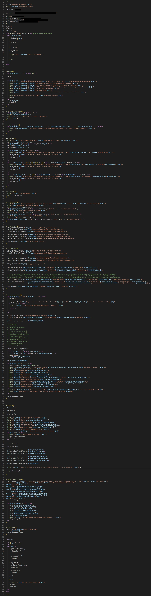
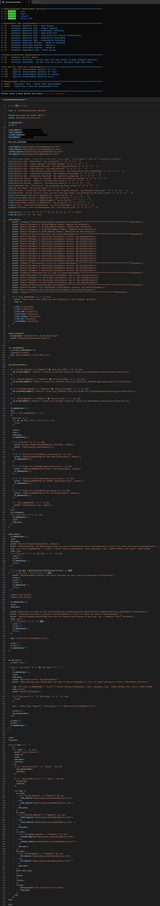
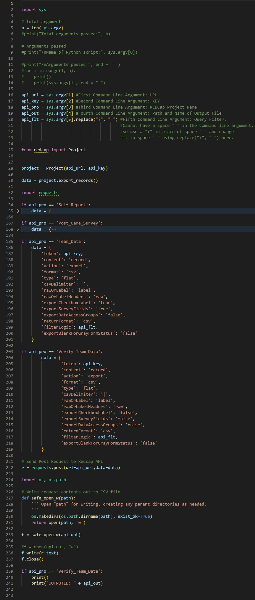
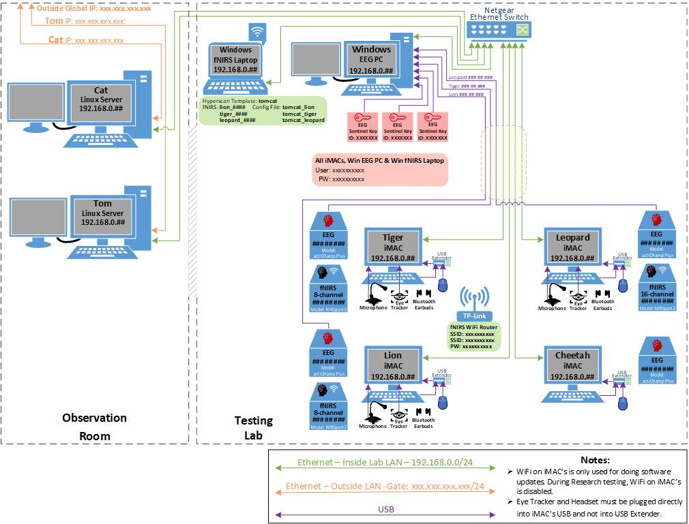
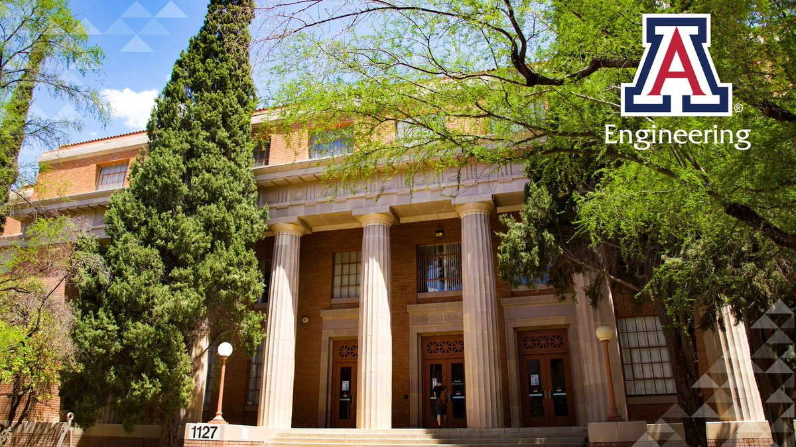
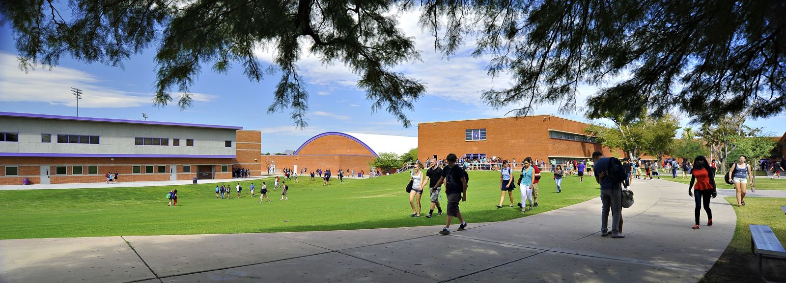
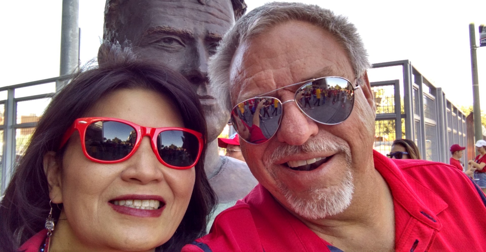

Rick Champlin
Researcher | Software Engineer | Electrical Engineer | IT Manager
Professional Skills:My Online Resume
Education:
University of Arizona
(2022 to Current) Researcher | Software Engineer | Mentor
Currently, I am assigned to the ToMCAT Research Program.
Responsibilities:
Develop software, procedures and documentation for the program. Oversee the operations of the lab and the experiments. Mentor the PhD and undergrad students.
Itcap Inc.

(1990 to 2021) CIO | IT Manager | Software Engineer
ITCAP Inc. (dba: DRA Software Training and DRA Consulting) went out of business in early 2021, mainly because of the COVID-19 pandemic causing loss of contracts.
Responsibilities:
Develop software, procedures and documentation for the program. Oversee the operations of the lab and the experiments. Mentor the PhD and undergrad students.
Garrett Airesearch
(now called Honeywell)
Programming
I am a very experienced programmer and database designer. Over the years, I have developed hundreds of software programs and designed many databases.
I have extensive experience with multiple software languages like Transact-SQL, VB & VB Script, C++, Java & Java Script, HTML & CSS, Python, Bash Script, and Uber Script, just to name a few.
And, I have designed many Databases, a lot of them are still in operation. Below is a few examples of real programs and database designs that I have developed, most still being used today.
Confidential and Security Sensitive content has been Redacted from the examples.
Just click on link to see an example of my work:
(Note: The code window is scrollable, just hold your mouse over the window.)
Back
Bash Script 1
Export RedCAP Data to Experiment Data Directories:

This is a program that I developed for the UA ToMCAT Research Program.
It exports data from one of ToMCAT's Databases, turns the data into "csv" files and place the files in the specified Experiment Directory on our lab Server.
Back
Bash Script 2
Verbally make Announcements into Participant’s Earbuds and on Server:

This is a program that I developed for the UA ToMCAT Research Program.
It plays pre-set and typed-in announcements into the participant's earbuds during an experiment. And, it tracks what announcements have been played.
If the server (Tom) is enabled, it will also play the selected announcement on the server's speakers in the control room so that the operator can hear what the participants are hearing.
Back
Python
API Interface to the UA ReDCAP Database:

This is a Python program that I developed to make API Calls and Query Request to the ReDCAP Database for the UA ToMCAT Research Program. It exports data from one of ToMCAT's Databases, turns the data into "csv" files and place the files in the specified Experiment Directory on our lab Server.
Back
Network Diagram
Lab Network and Wiring Diagram:

This is a Diagram of the Network and Wiring schematic I designed for the UA ToMCAT Research Program Lab.
Back
University of Arizona
Electrical & Computer Engineering:

Bachelor of Science in Electrical & Computer Engineering (B.S.E.E.)
- Electrical Theory
- Electronic Design
- Computer Science
- Software Design
- Computer Programming
- Minor in Broadcasting
Back
Special Projects HS
(now called University HS)

Associate Electrical Engineer Technology (A.E.E.T.)
About

Rick ChamplinMy Online Resume
Born and raised in Tucson, AZ (true Tucsonan) Married with 2 boys.
I have been an Electronic Technician, Electronic Engineer or Software Engineer my entire working career.
Even as a teenager in High School, my first real job was as an Electronic Technician in the Stage Department for the Tucson Community Center.
While most of my friends were working in fast food restaurants or as babysitters as their first jobs, I was trouble shooting and repairing audio & sound equipment for the TCC and the City of Tucson.
Even as a young teenage (way before the internet and before the PC), I learned to program on a breadboard computer I had built, TRS 80s, SIMs and the School District’s DEC PDP11 Mainframe.
I was designing & building electronic circuits and programming them as my main hobby and interest.
I studied and received my Technician’s Amateur Radio License when I was about 15 years old and my 2nd Class FCC Commercial License at about 17 years old.
I have been working for my current employer, ITCAP Inc, for over 30 years. In those 30 years, I have designed developed and programmed hundreds of applications & databases for both in house use and other companies/entities.
Pretty much all of ITCAP’s applications, systems and databases, I have designed and developed over the years.
I have been contracted to designed, developed and program applications for over 50 different companies & clients (ITCAP dba DRA Consulting).
A lot of those applications are still in use today.
I have been in my current position, ITCAP’s VP of Information Technology, CIO and Director of Software Development for over the last 20 years.
I am a very experienced software, database and application developer & engineer.
I am a hard worker and, as my record shows, always very dedicated to my job and assigned tasks.
All my life, I have been a good self learner.
I learn new things very quickly and have always been a good team player.
Contact
Back
Thank you!
Rick Champlin has received your message: